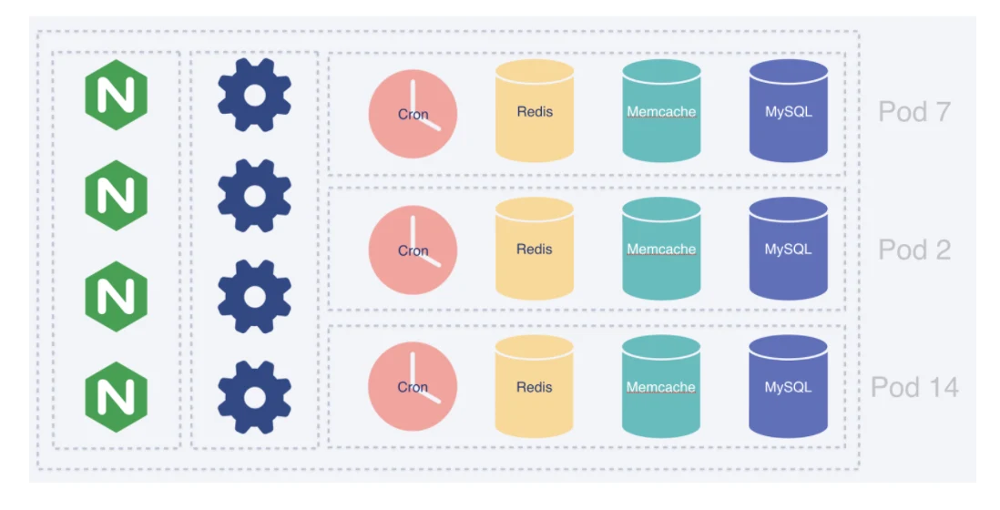
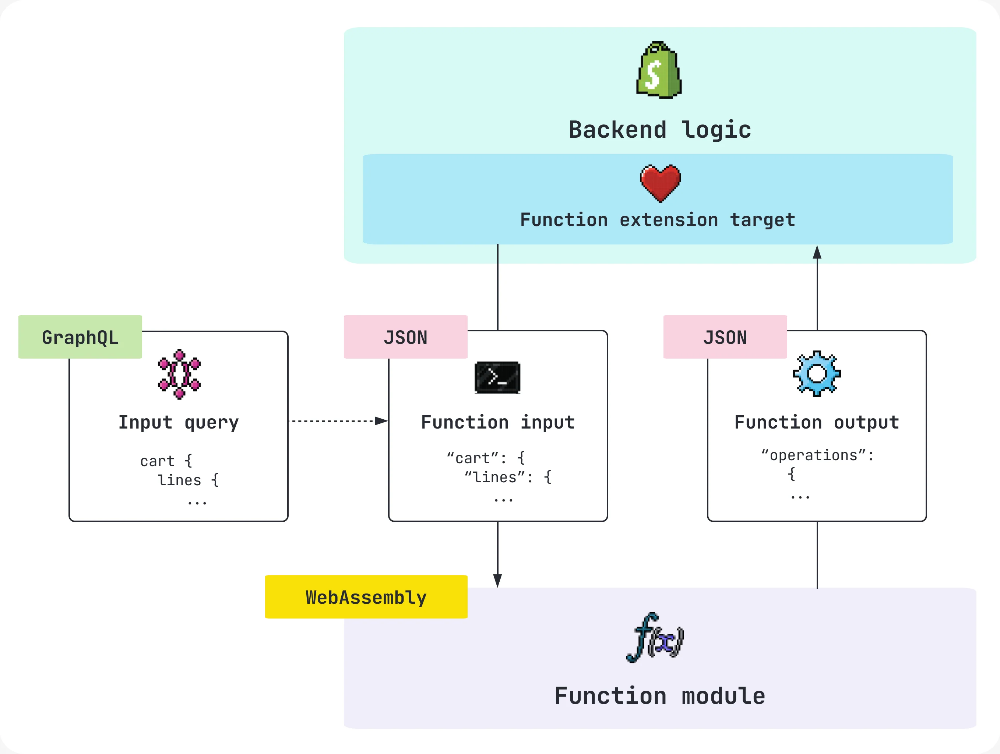

Introducción
Cuando hablamos de aplicaciones Cloud, muchas veces podemos llegar a pensar que una aplicación es Cloud-Native simplemente porque funciona dentro de la nube, pero realmente la diferencia entre una aplicación Cloud-Native y una Cloud-Enabled va mucho más allá de dónde se encuentra alojada. Lo importante es entender cómo fue diseñada y cómo utiliza las capacidades que ofrece la nube.
La Cloud Native Computing Foundation relaciona las aplicaciones Cloud-Native con características como contenedores, microservicios, infraestructura inmutable, serverless, APIs declarativas, resiliencia y observabilidad (CNCF, 2024). Por otra parte, una aplicación Cloud-Enabled normalmente es un sistema que fue diseñado originalmente para infraestructura tradicional y posteriormente fue adaptado para funcionar dentro de la nube.
Es así que mediante este ensayo me interesa analizar el caso de Shopify para determinar si realmente podemos considerarlo Cloud-Native, Cloud-Enabled o incluso una combinación de ambos.
Aplicación seleccionada
Shopify es una plataforma SaaS de comercio electrónico utilizada por millones de negocios para administrar sus tiendas en línea. Algo que me llamó bastante la atención al investigar su arquitectura es que, aunque trabaja a una escala enorme, su núcleo sigue utilizando un monolito modular desarrollado principalmente con Ruby on Rails.
Esto resulta interesante porque muchas veces relacionamos inmediatamente Cloud-Native con microservicios. Sin embargo, Shopify llegó a evaluar una migración hacia microservicios y decidió mantener de manera intencional su arquitectura de monolito modular (Westeinde, 2019).
Aun con esta arquitectura, durante Black Friday–Cyber Monday de 2025 Shopify llegó a manejar picos de 489 millones de solicitudes por minuto en el borde y 117 millones en sus servidores de aplicación (Shopify, 2025), por lo que claramente estamos hablando de una plataforma diseñada para soportar una gran cantidad de usuarios.
Análisis tecnológico
Aquí es donde podemos comenzar a identificar las características Cloud-Native de Shopify. Para organizar su monolito, Shopify utiliza Packwerk, una herramienta que permite establecer fronteras entre diferentes partes del sistema y controlar sus dependencias. De esta forma pueden obtener algunas de las ventajas de los microservicios, como la separación de responsabilidades, sin necesariamente dividir todo el sistema en servicios independientes.
Por otra parte, Shopify utiliza contenedores administrados mediante Kubernetes sobre Google Cloud, lo que facilita el despliegue y el escalamiento horizontal de la plataforma. Además, su infraestructura sigue un modelo inmutable, es decir, cuando se necesita una nueva versión de un contenedor este se reemplaza en lugar de modificarse directamente (Google Cloud, 2026; Kovyrin, 2024).
También podemos encontrar APIs como Storefront API, Admin API y Customer Account API, además de webhooks que permiten integrar Shopify con otros sistemas.
Otro punto que considero importante es el uso de Shopify Functions. Estas permiten ejecutar lógica personalizada mediante WebAssembly dentro de un entorno controlado de Shopify (Shopify Engineering, 2023). Como podemos observar en la Figura 2, la función recibe información, procesa la lógica mediante WebAssembly y posteriormente devuelve un resultado al backend de Shopify.
En cuanto a los datos, Shopify utiliza tecnologías como MySQL, Vitess, Redis, Memcached, Kafka y Elasticsearch. Su arquitectura por pods divide diferentes grupos de tiendas y sus recursos, tal como podemos observar en la Figura 1. Esto ayuda a que, si ocurre un problema dentro de un pod, no necesariamente se vea afectada toda la plataforma.
Finalmente, Shopify también utiliza despliegue continuo, infraestructura como código y herramientas de observabilidad mediante métricas, trazas y bitácoras. Además, realiza pruebas de carga, ejercicios de ingeniería del caos y failovers regionales para comprobar la tolerancia a fallos de la plataforma (Petroski y Frail, 2025).
¿Cloud-Native o Cloud-Enabled?
Después de analizar estos elementos, considero que Shopify se puede clasificar como una arquitectura híbrida con predominio Cloud-Native.
Por un lado, utiliza contenedores, Kubernetes, escalabilidad horizontal, APIs, serverless, observabilidad, automatización y una arquitectura preparada para trabajar de forma distribuida. Sin embargo, su núcleo continúa siendo un monolito modular y no una arquitectura completamente basada en microservicios.
Es aquí donde Shopify nos demuestra que ser Cloud-Native no significa obligatoriamente utilizar microservicios para absolutamente todo. Lo importante es aprovechar las características de la nube de acuerdo con las necesidades reales del sistema.
Diagramas de apoyo


Conclusiones
Mediante este análisis aprendí que la diferencia entre Cloud-Native y Cloud-Enabled no siempre es tan sencilla como parece. Al comenzar la investigación, yo también relacionaba directamente los microservicios con una arquitectura más moderna y madura, pero Shopify demuestra que esto no necesariamente es así.
En este caso, mantener un monolito modular no evita que Shopify aproveche contenedores, Kubernetes, escalabilidad horizontal, serverless, observabilidad y tolerancia a fallos.
Por lo que podemos decir que Shopify utiliza una combinación de diferentes enfoques y que, aunque conserva algunas características que podríamos considerar tradicionales, la mayor parte de su infraestructura y operación utiliza prácticas Cloud-Native. Al final, considero que la arquitectura correcta no es aquella que utiliza más tecnologías modernas, sino aquella que utiliza las herramientas adecuadas para resolver las necesidades reales del sistema.
Referencias
Cloud Native Computing Foundation. (2024). CNCF cloud native definition v1.1. CNCF Technical Oversight Committee.
https://github.com/cncf/toc/blob/main/DEFINITION.md
Google Cloud. (2026). Google Kubernetes Engine documentation.
https://cloud.google.com/kubernetes-engine/docs
Kovyrin, O. (2024, 16 de junio). Interview: Inside Shopify's modular monolith.
https://kovyrin.net/2024/06/16/interview-inside-shopify-monolith/
Petroski, K., y Frail, M. (2025, 20 de noviembre). How we prepare Shopify for BFCM (2025). Shopify Engineering.
https://shopify.engineering/bfcm-readiness-2025
Shopify. (2025, 2 de diciembre). Shopify merchants break records with $14.6 billion in Black Friday–Cyber Monday sales. U.S. Securities and Exchange Commission.
Shopify Engineering. (2023, 9 de febrero). Bringing JavaScript to WebAssembly for Shopify Functions.
https://shopify.engineering/javascript-in-webassembly-for-shopify-functions
Westeinde, K. (2019, 21 de febrero). Deconstructing the monolith: Designing software that maximizes developer productivity. Shopify Engineering.
https://shopify.engineering/deconstructing-monolith-designing-software-maximizes-developer-productivity